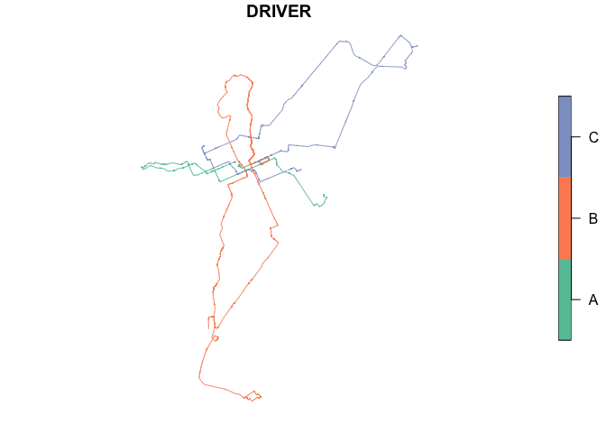

The goal of ndsbr is to help you load, manipulate and analyze the data sample of the Brazilian Naturalistic Driving Study (NDS-BR).
Overview
This package privides two main categories of functions: nds_create and nds_calc, in addition to other utility functions. nds_create functions are used to create spatial objects in sf format, using the naturalistic data as input:
nds_create_pointsnds_create_lines
nds_calc functions can be used to extract basic information of the naturalistic sample (traveled time or traveled distance) and safety-related variables, such as speeding:
nds_calc_distnds_calc_timends_calc_speeding
nds_load_data is used to load naturalistic data and nds_download_sf can be used to download spatial data and import into the project environment.
A brief presentation (in portuguese) about ndsbr can be accessed here.
Installation
You can install the current version of ndsbr like so:
# install.packages("devtools")
devtools::install_github("pabsantos/ndsbr")Example
This is a basic example which shows you how to load NDS-BR data and calculate traveled distances. First, nds_load_data loads the sample from all NDS-BR files inside a specific folder, defined by the user.
library(ndsbr)
path <- system.file("extdata", package = "ndsbr") ## Example files location
nds_data <- nds_load_data("driver", path)
head(nds_data, n = 5)
#> # A tibble: 5 × 34
#> DRIVER LONG LAT DAY DAY_CORRIGIDO `03:00:00` TRIP ID PR H
#> <chr> <dbl> <dbl> <chr> <chr> <chr> <dbl> <chr> <chr> <dbl>
#> 1 A -49.2 -25.5 26/8/2019 26/8/2019 22:17:27 5 A05 19:17… NA
#> 2 A -49.2 -25.5 26/8/2019 26/8/2019 22:17:28 5 A05 19:17… 0
#> 3 A -49.2 -25.5 26/8/2019 26/8/2019 22:17:29 5 A05 19:17… 0
#> 4 A -49.2 -25.5 26/8/2019 26/8/2019 22:17:30 5 A05 19:17… 0
#> 5 A -49.2 -25.5 26/8/2019 26/8/2019 22:17:31 5 A05 19:17… 0
#> # ℹ 24 more variables: M <dbl>, S <dbl>, TIME_ACUM <dbl>, SPD_MPH <dbl>,
#> # SPD_KMH <dbl>, ACEL_MS2 <dbl>, HEADING <dbl>, ALTITUDE_FT <dbl>,
#> # VALID_TIME <chr>, TIMESTAMP_GPS <chr>, CPOOL <chr>, CPOOLING_CHECKED <chr>,
#> # WSB <chr>, UMP_YN <chr>, UMP <chr>, PICK_UP <chr>, ACTION <chr>,
#> # GPS_FILE <chr>, CIDADE <chr>, BAIRRO <chr>, NOME_RUA <chr>,
#> # HIERARQUIA_CWB <chr>, HIERARQUIA_CTB <chr>, LIMITE_VEL <chr>Creating a sf object with linestring geometry using nds_create_lines
nds_lines <- nds_create_lines(nds_data, x = LONG, y = LAT)
plot(nds_lines["DRIVER"])
Finally, nds_calc_dist extracts traveled distance, grouped by a variable defined by the user.
nds_dist <- nds_calc_dist(nds_lines, geom = wkt_lines, by = DRIVER)
nds_dist
#> # A tibble: 3 × 2
#> DRIVER DIST
#> <chr> <dbl>
#> 1 A 22508.
#> 2 B 51529.
#> 3 C 37736.